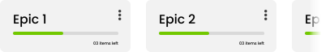

Agile process - Sprint {{ selectedSprint.index }}
A visual display of the development status, aiding in improved planning and task coordination.
View your epic's process
Project Indicators Analysis
Efficient communication, but better task coordination needed. Deadlines met, but underestimated completion times. Improved code quality, more testing required. Positive feedback reception crucial for project evolution.
Burndown Chart - Sprint {{ currentSprint.index }}
Metrics
Lead Time
{{ leadTimeDaysAverage }} days
Sprint Velocity
{{ sprintVelocity }} points
Gantt Chart - Sprint {{ currentSprint.index }}